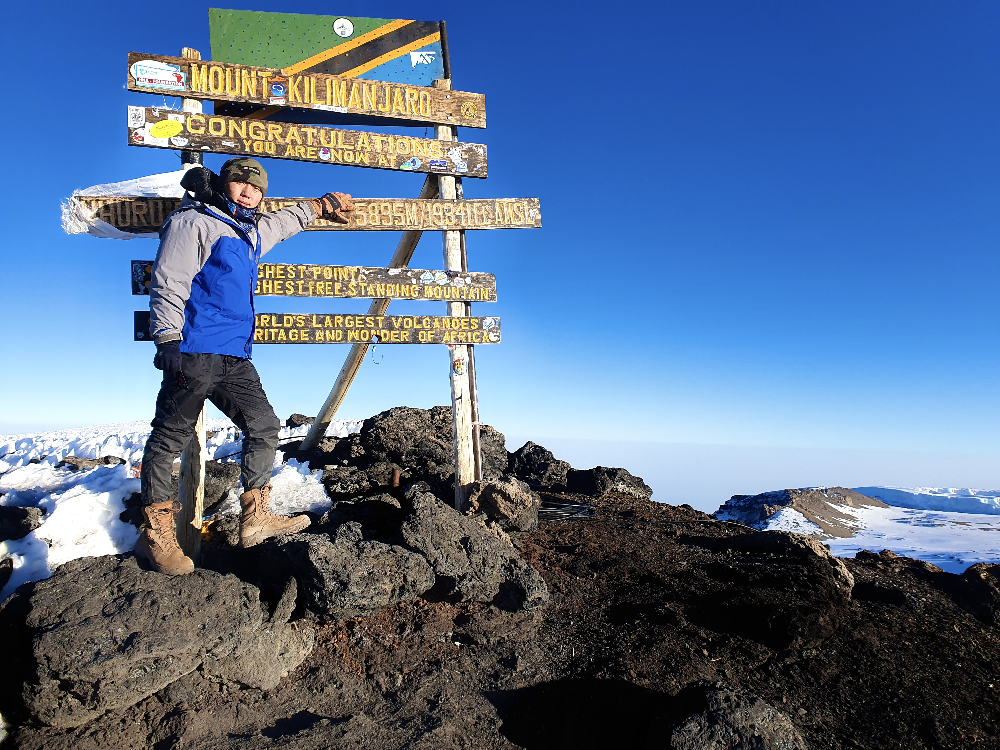
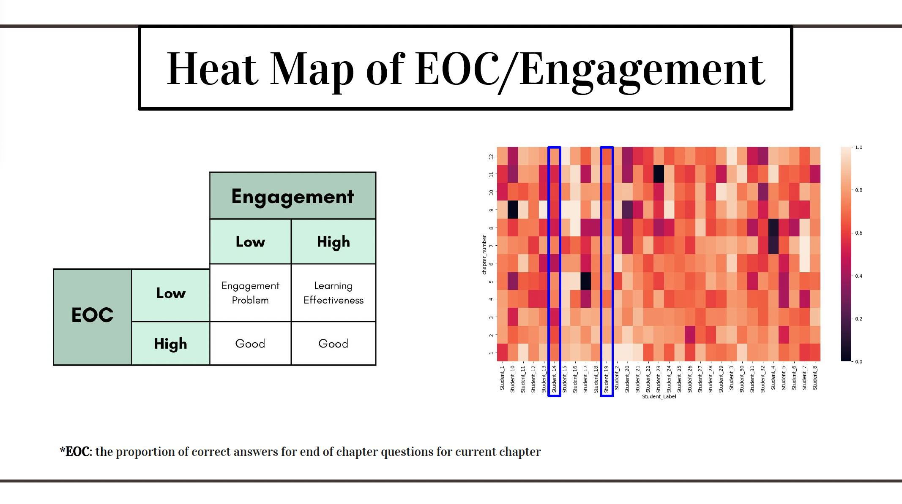
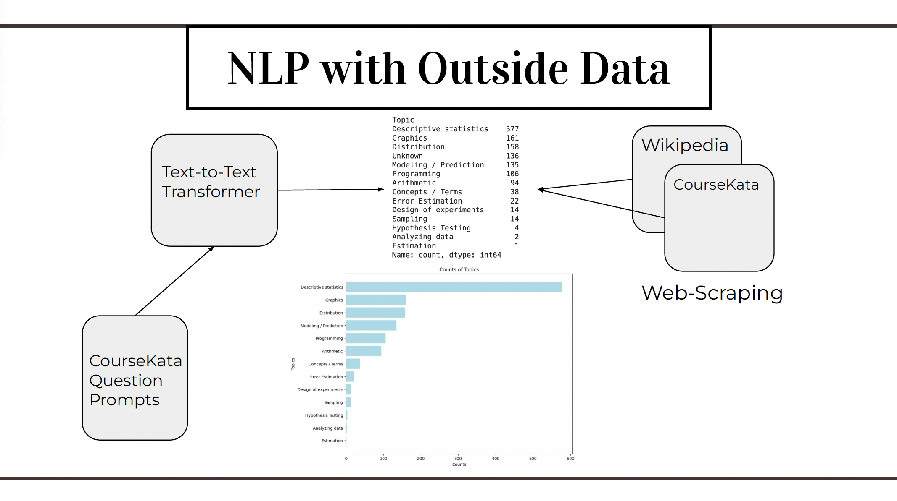
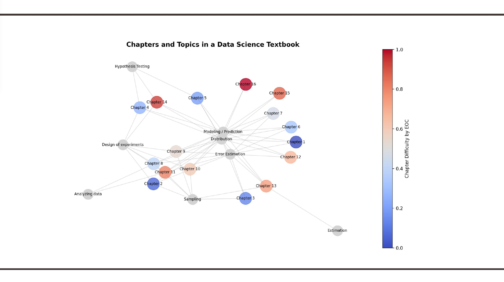
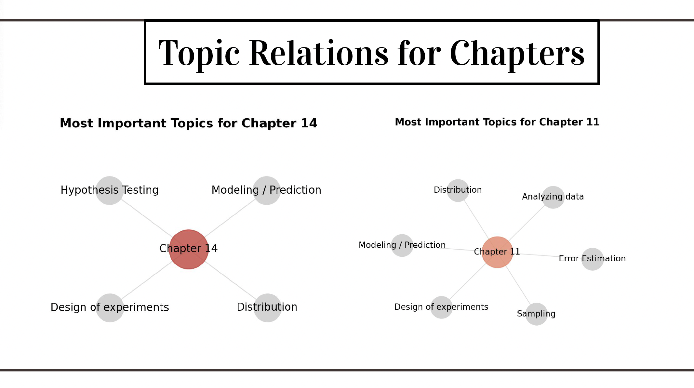
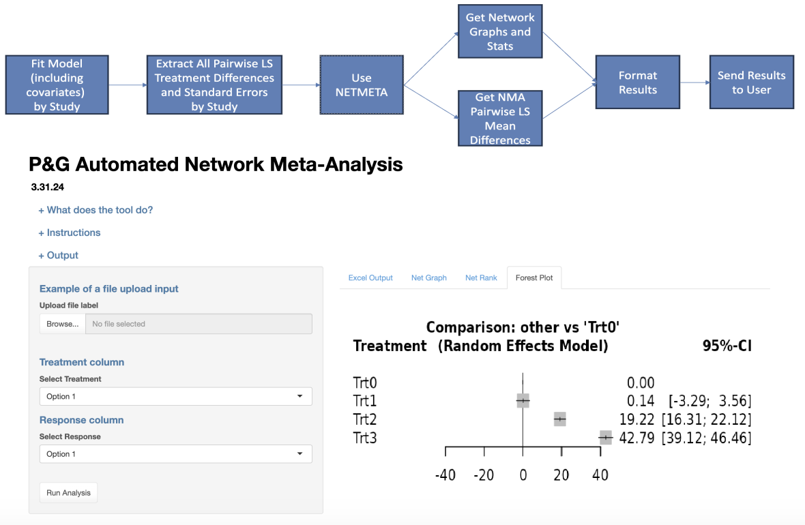
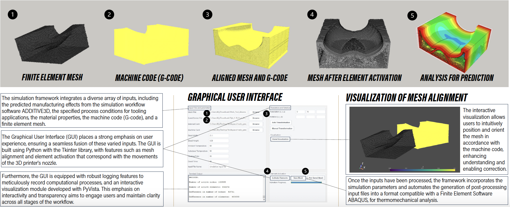

Junhyeok Kil
I am a third-year undergraduate student at Purdue University.
I am also an undergraduate researcher at Purdue CMSC.
I live by this credo.

Research / Projects
I am currently studying PINNs to explore parametric solutions in composite manufacturing processes.
Team attained Best in Show & Best Use of Outside Data Award at the ASA DataFest 2024.




To test different versions of a products (i.e. laundry detergent), a study comparing every pair of products needs to be conducted. This is both time, effort, and money intensive. To overcome this, NMA is utilized to compare any pair of product, given that they have been compared to a baseline product. Using this technique, we developed an app, for Procter & Gamble (P&G)'s internal use, to automate this analysis for users who are not familiar with statistical software, in addition to time, effort, and money.

Notes (To be updated).
This research integrates a physics-based framework that automates the prediction and shape compensation for tooling printed with composite materials. This simulation framework integrates various inputs, including the manufacturing effects predicted through ADDITIVE3D, the process conditions for the tooling application, material properties, the machine code (G-code), and a finite element mesh to produce a set of input files required to carry out a thermomechanical analysis in the finite element software ABAQUS. The accompanying Graphical User Interface (GUI) prioritizes user experience, streamlining the integration of varied inputs. By effectively predicting shape changes, manufacturers can reduce waste, improve product performance, and accelerate the prototyping-to-production cycle.

Python script that generates continuous single line animation by edge detection and spline fitting.
Contact
Email: kilj [at] purdue [dot] edu
Our lives are intertwined within the mysterious fabric of the universe. Connections we form not only shape us individually, but also collectively influence the truths we seek. Every action we take sends ripples through this fabric, revealing its profound impact on the greater whole.